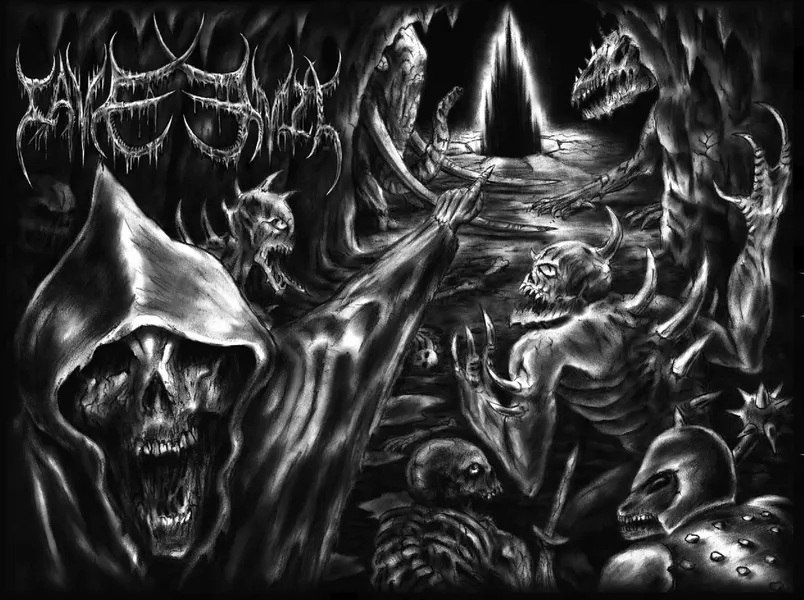
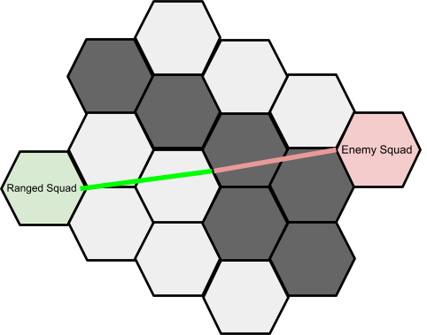
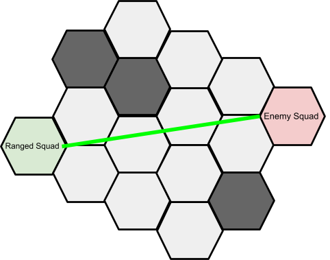

Cave Evil Strategy Guide
Written By: Jaeden Fuller | October 6th, 2021
Hayden, N (2011) "Final Box Cover" BoardGameGeek
Want to start playing the game, but you don't want to lose? Or do you lose every time you play and want to finally experience the glory of winning? If you fit either of these descriptions this is the right article for you. We will be covering the basic strategy of drawing cards/creating your squads.
Setting It Up
Before we start discussing Cave Evil’s ideal strategy, it’s key to properly set it up. The following list will catalogue everything you need to play Cave Evil that’s not contained in the game’s box:
- 1 or more other players
- A large table/play space
- 4 cups/containers to hold your resources (gore, metals, shadow flame) and your rock markers
- 1 calculator per-person
You are almost ready to play, all you have to do next is take a read of the rule book, and you should be good to start playing.
Drawing Cards
One of the biggest things you have to be conscious of as a player in Cave Evil is your cards. Well-crafted squads are the single-most vital component of the game and will almost completely secure your victory.
The first thing to consider is what deck you will draw from at the start of your turn, the following table will list the pros and cons of each deck:
| Deck Type | Pros | Cons |
| Bribe |
|
|
| Construct |
|
|
| Summon |
|
|
| Abyss |
|
|
Basic Squads
Now that you should have more of an idea on what decks to draw from to get the cards you need, it's time to talk basic squad strategy! The subsequent list will show the type of squads you require:
- Necromancer squad
- Excavation squad
- 2 or more attack squads
Firstly, you have your necromancer squad. This should be the squad that carries all your resources and doesn't necessarily need many creatures in it. Placement-wise, you should keep it protected and far away from enemy squads. It’s important to do so as if you lose your necromancer squad you are almost guaranteed to lose.
Next, we have the excavation squad. This squad should have at least 3 excavation power, but it will be much more useful to have it at 4 excavation power as you can perform instant excavations. The main purpose of this squad is not to be strong, so don't worry if the troops in it aren't. You will be using this squad to excavate the cave where you can find extra resources as well as create faster paths to areas on the map. The squad can also be used to collapse areas of the cave. Collapsing can be useful if you want to close off tunnels, but can also be useful for stopping your opponent’s squads.
Now onto attack squads. These are the most important squads to build correctly, as a good attack squad can make or break a game. Generally, you are going to want to fill these squads with powerful creatures that can carry and use items. The more items they can carry and use, the better, as items can turn a good squad into a great squad. With that being said, it’s also very critical to consider the abilities your creatures have. As an example, take the hellion cards. Stat-wise, they aren't that great, but their ability to be in a squad of two other hellions transforms them into an exceptional card to form your attack squad around.
Advanced Squads
Onto some more advanced squads. These squads are completely optional but can prove to be quite useful if you find the right cards for them. These squads are:
- Ranged squads
- Resource collection squads
- Throwaway squads
Firstly, ranged squads. Whilst they aren't necessary they are a great way to pick off your enemies squads. There is no risk in attempting a ranged attack because your ranged squad can’t be destroyed unless they’re in an adjacent hex with the opponent's squad. Positioning wise, you are going to want to keep them in line of sight with the enemy because, unless they have a special ability that says otherwise, they will not be able to attack if they aren't. You should also keep the squad positioned on the very edge of what their ranged-attack hex range allows as the closer you get to the enemy squad the more likley you squad will be destroyed.
Invalid Line Of Sight

Valid Line Of Sight

Next, we have the resource collection squad. Whilst most of the time you should be perfectly fine collecting resources with your regular squads, every once in a while there might be something that pops in across the map that you really want. That’s where this squad comes in. Forget about strength, this squad is purely for movement speed. Get in and get out as fast as you can so you can return the resources to your necromancer squad. The major thing to consider when creating this squad is that the creatures must have the ability to carry items, if they don't, you are cutting out one of the major resources you can collect from the map.
Finally, we have throwaway squads. It’s entirely possible that you could go a whole game without finding a single creature that would fit in a squad like this. That being said, it’s important to know how to use these types of creatures if you end up drawing them, as they can massively disadvantage your opponent. The type of creatures I’m talking about are the ones with on-death abilities that have negative effects on the enemy squads. For the most part, these creatures don't work in any other squads, as they’re normally weak stat-wise. So their main purpose is to be placed into no win situations, all by themselves, and have them get destroyed so they can use their on-death abilities to disadvantage the enemy squad, making it easier for your others squads to finish the job.
In this article, we covered the pros and cons of each deck, basic squads and advanced squads. Hopefully, next time you play you will be able to feel the feeling of sweet victory. If you want to further your knowledge of the game our next article will be covering the strategy of combat!